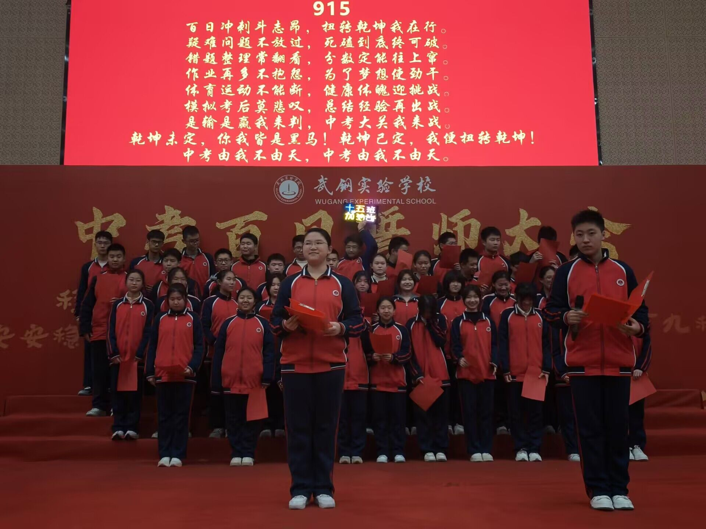
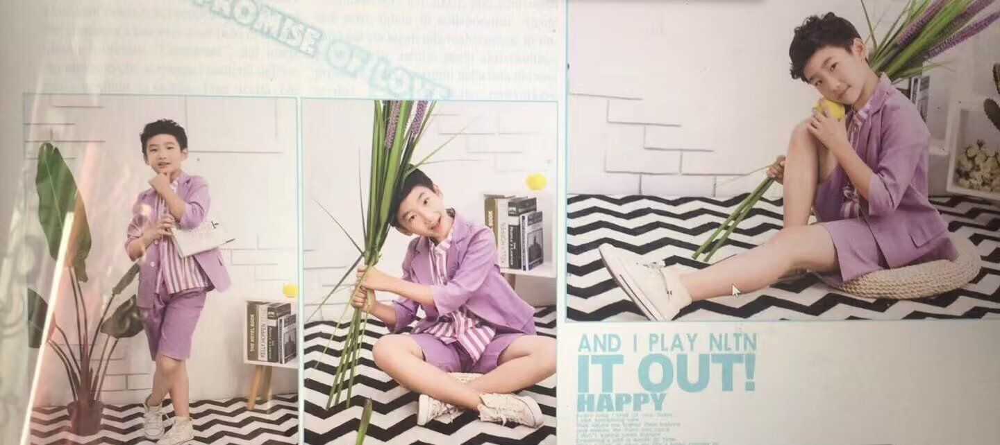
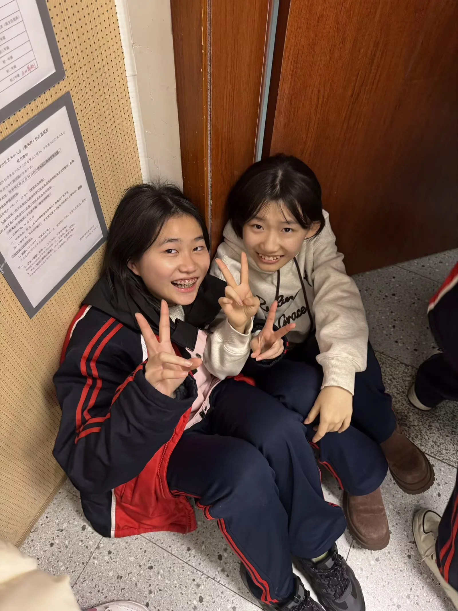
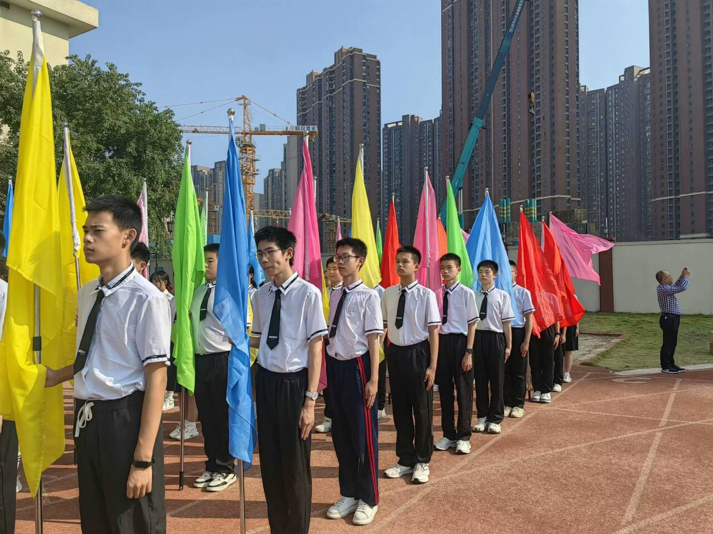
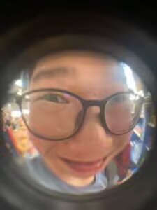
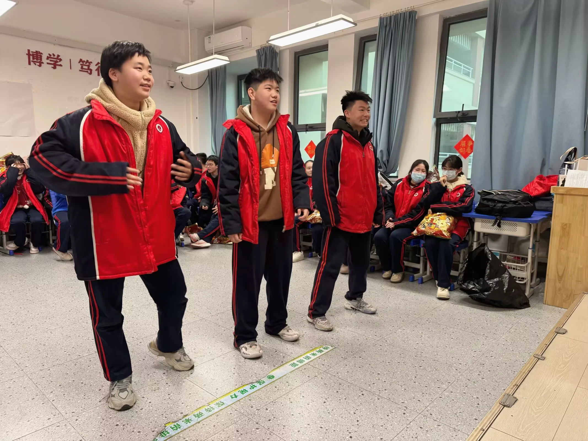
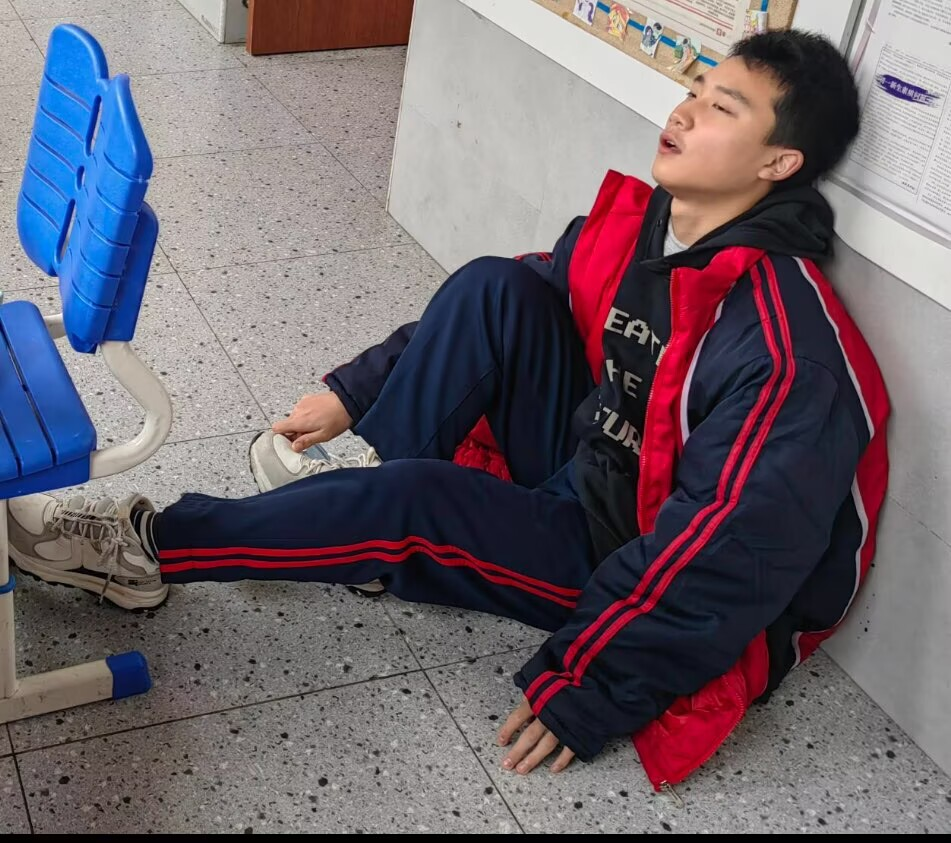
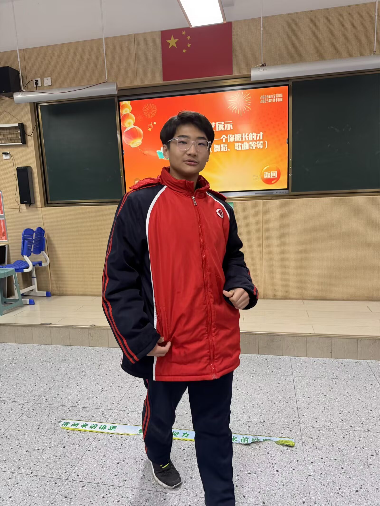
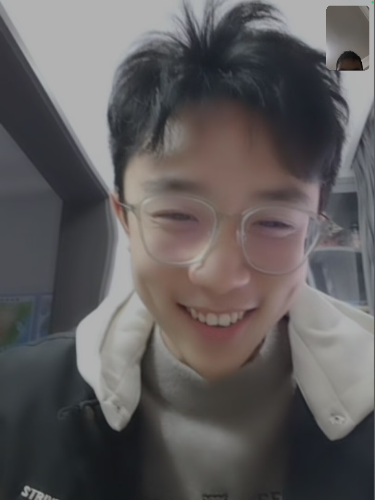
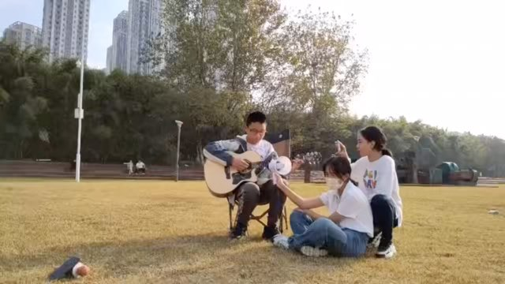

SAR
嘿嘿，快一个月没更新，但这次出了一个大大的文章，只是一个小更新。
新增黄总长文《可乐博弈(上)》！
下架三个无用文章；
《盗号》很不幸...学校电脑没有以前聊天记录文件，就不搞了，而且这是很久之前的事了；
如果有好玩的时事投稿，以图片形式投给我放首页；
好图也进行了小小的整理...
(此处缺少图片...)
首发日:2025/12/14
更新时间2026/01/21
好图展示

























《清风》
——- 献给往日种种
故事的开头可以是伟大的，也可以是平凡的。这个故事的开头是平凡的，这个故事，也是很普通的。过去的都过去了，但风仍控制不住去回忆曾经的事。算不上朝花夕拾，不过是朝花朝拾，浅浅回忆罢了。梦的开始只是一个无心的意外，一切都是缘分，也只是缘分。
一.
班主任早已看不惯风天天上课和身边同学闲聊，这天终是忍不住，将他换到了别的位置。风拖着桌子，嘴里骂骂咧咧，可瞧见离相熟的朋友不远时，两人相视一笑。等他落了座，才发现自己就坐在清的正前方，心底又悄悄漾开一抹笑意。风喜欢在学校和朋友待着，家里压抑的空气让他难受，倒不是有什么天大的矛盾，只是那份无趣，总让人喘不过气。能和要好的朋友离得近，自然是高兴的。
清的数学考得不好，埋着脑袋默默流泪，无暇抬头，自然没留意身前换了人。听着她断断续续的抽泣声，风想着安慰，却又觉得唐突，只是偷偷回头瞥了她一眼。晚饭时，清本就受着头疼的煎熬，又挨了成绩的打击，索性跟老师请假回了家。这天是星期四，风也说不清自己为何偏偏记住了这个日子，或许是晚自习在教室放了电影，或许，只是因为这一天，他坐在了清的正前方。
已是春日，清晨的天空晕着一层奶白，路边车身上凝着的露水，氤氲出微凉的水汽，给风裹上一层湿漉漉的凉意。他打开教室的灯，光漫开来的一瞬，新的一天又开始了。
风正埋头写题，后背忽然被轻轻戳了一下，心脏悄悄跳快了半拍，揣着几分细碎的欢喜，慢慢回头。清把身子往前探了探，轻声问：「你能借我一支黑笔吗？」风到现在都记得那支笔的款式，不过是支再普通不过的笔，却成了两人之间，一个温柔又有趣的开端。
真的奇怪，清的身旁明明就有女同学，找她们借笔，总比找自己要方便得多。去你的，自作多情。风在心里暗暗骂了自己一句。可嘴上再怎么否定，心底却揣着这点小事惦念了一整天，甚至隐隐盼着，身后能再传来那轻轻的触碰，是她来还笔。
直到第二天上了几节课，清才在笔袋的角落里翻出那支笔。她慌忙把笔握在手里，轻轻碰了碰风的后背，小声说：「你的笔还你。」不知是出于什么心理，风脱口而出，连声说着：「不用了，这支笔，送你算了。」
送我算了？这句话在清的耳边轻轻绕着，她怔怔地望着风的背影，失神了许久。其实从前，清对风，就存着几分与旁人不同的心思，说不清道不明。那就，收下吧。
一开始，风和清只是在一起讨论题目。清拿着风的化学作业帮他「检查」，发现几处错误，于是帮他改了过来。也许这是我毕业后唯一留住的她的笔迹了... 风看着那几个有特殊意蕴的化学式，喃喃自语。有时候两人也不说题目，由身边的故事聊开去，或者一起悄悄吐槽别人。清总是爱把身子稍微往前探一些，凑得近近的，好与风讲话。据外班一个人说，清那个坐姿，一看就不对。清在跟风讲八卦的时候，风就喜欢盯着她的脸看，盯着她讲话时那种发光的眼神，像是夜空中最显眼的星，看着很可爱，轻轻戳在他心里最软的地方。
清与风慢慢聊熟了，一种说不清的情愫，在两人心里悄悄生了根。放学路上，清和妈妈聊天，常常提到风的名字，妈妈终于忍不住，盯着她问：「你为什么总是提到那个男生啊？」即便被追问，有时候清还是忍不住，要和妈妈聊几句风的事。深夜里是最安静的时候，风的脑袋是放不空的，满脑子都是清的样子，幻想着这样，幻想着那样。即使觉得这一切都不太可能，他还是喜欢盯着天花板，回忆着白天发生的一点一滴，在脑袋里随意地、虚无缥缈地画一个树状结构，一点一点算着概率：假如...
以前，周末对风来说是难熬的，漫长得没有尽头，什么玩的都没有；现在，周末变得更加难熬，因为没有她。
每天中午吃饭，风总是吃得飞快，扒完几口饭就跑回教室，静静地坐在那里写作业。以前吃得快是从小养成的习惯，现在，却多了一点别的心思。即使觉得这想法有点傻，他还是会这么想、这么做。清这天中午吃得很少，面前只有一小块面包。风知道她每天都这样，心里微微发紧，有点心疼，忍不住开口：「你每天就只吃这些吗？」「是啊，没什么的。」清抬眼看他，又啃了口面包。
二.
体育课和大课间，清总是待在教室里不下去。风也常常劝她，不锻炼一下不行，清每次都连声答应，可下次依旧乖乖待在座位上。这一次体育课，体育老师迟迟不到操场，风在跑道上站得无聊，心里忽然冒出一个念头，想偷偷跑回教室。在楼梯口，风与巡查的老师擦肩而过，他假装没看见，低着头依旧往上走。昏暗的教室里，果然只有清一个人，正埋着头写英语卷子。两人没说太多话，只是简单分了下「任务」：一人完成卷子的一部分。教室很安静，只有窗外的鸟叫声，和操场初一学弟学妹们的喧闹声传进来。忽然，她的一句话，轻轻打断了这份寂静：「风，你有过喜欢的人吗？」这次是风怔住了，他隐约觉得后面的女生等着他说些什么「有价值」的话。怎么能直接说呢，虽然心里早就认定了…… 风有点羞涩，只是笑笑说：
「小学那时候天天疯玩，哪里有什么喜欢的人。」
「那你现在呢？」
「你就当是，有吧……」
清笑了，很小的一声：「—— 有问题」
「滚，去你的，别说了，什么有问题。」风不是烦了，只是耳根都热了，实在不好意思。
那一天，清盯着前面的男孩傻笑，上课的时候，总故意嘀咕着「有问题」。风要是说她几句，她就回答：「我不达目的不罢休，你跟我说一点啊。」
清的心里泛起一片波澜，这颗石子，就是前面那个男孩子投进去的。那可是他自己说「平常不和女生讲话」啊，可他和我聊得这么多，有问题，有问题。不过也可能是离得近，多说几句罢了。我得找他问点什么吧，他应该会说的。
于是她扯着风的衣角追问：「风，风，那你能给什么提示吗，什么都行……」
现在，风的心里渐渐有了底，难道这并非不可能？哦，提示啊…… 正好他刚在学校图书馆看到一个小故事，钻石用小盒装，不就是说她吗？这么说，合适吗？风的思绪被清的催促声搅乱了。
「滚滚滚，别问了，别问了，快看这道题……」
「你说一点啊。」
清有些着急，想知道风心里的人到底是不是别人，巴巴地等着他的回答。风前些天特意查过，如果一个女生喜欢自己，就会试探性地问自己喜欢谁。那就说一点她肯定猜不透的吧。
「行行，我说一点，就是呢，钻石用小盒装，垃圾用大框抬……」
「什么啊，哪方面的？」
「你自己去学校的图书馆看啊，你想去吗，我可以带你去……」
这句话不经大脑就说出去了，风慌忙闭住嘴，不再继续。清依旧不死心，念叨着：「有问题，有问题。」
城市里的夜晚是看不到星星的，只有月光柔柔地洒在走廊上。地上风的影子后面，又挨过来一小片影子，风不用回头，就知道是谁来了。月光把两个人的影子越拉越近，「风，那个钻石用小盒装到底什么意思啊？」风望着清的侧脸，脚步稍稍变慢，慢慢地给她简述那个故事。清听得一头雾水，脑子里一直在思索故事的寓意，一抬头，风已经跑到前面去了。
几天过去了，晚饭铃响了，浅蓝的天渐渐被暮色浸透，天色沉了下来。风还挂念着那句「我带你去」，看到清旁边的人走开，于是悄悄挨过去，试探着问清：「你去图书馆吗？现在有时间，趁保安没注意，混进去就好了。」
清的心中一阵欣喜，放下手头的东西就往外跑，回头看了一眼风，又刻意挑了偏一点的楼梯下楼。风当时只以为清是觉得这个楼梯去图书馆更方便，后来才知道，她是为了避开熟悉的同学。清下楼很快，风都有些追不上。看着她转过拐角往前跑的样子，风忽然觉得，离心里期盼的「那样」，好像越来越近了。当他们俩跑到图书馆门口，看到紧锁的门时，脸上都没什么表情，心里却不约而同漫过一阵失望。风只是告诉她：「我每次来都不会锁门啊，也许学校发现我总来，就把门锁了，以后再来吧。」
三.
全班又一次换座位，风一直揪着心，生怕往斜后方调之后，会和清分开。但令他高兴的是，他们俩依旧挨在一块，坐在教室左边的角落。就是这几个星期，清和风走得越来越近。清这一阵子依然缠着风问东问西，风每次都只是含糊敷衍几句，实在不好意思说得太明白。教室的喧闹声仿佛把这个角落隔成了一个小小的结界，清盯着风出神了好一会儿，轻轻拍拍他的肩：
「那你毕业之前，会和那个女生表白吗？」
「会啊。」
「不怕尴尬吗？」
风看着她，弯了弯嘴角：「这有什么呢？」
全市调考一晃就过去了，成绩也出得很快，风和清一个是班上第二，一个是第四。这一天，清上课的时候想了很久，既然彼此的心意都这么明显了，我和他都心知肚明，为什么不主动暗示一下呢？肯定可以的。
「风，那个女孩的生日是什么时候啊？」
风回头看着清，发现她竟然还在本子上工工整整记着那些提示，心里一下子漫过一阵甜意，没想到她还把这些都仔仔细细记着。
「你把这些都写下来，是什么意思啊，别折磨我了。」
「我就问你几个问题，行吗？」
「嗯？」
「那个人她考得进班上前二十吗？」
「有」
「前十五呢？」
「有」
「前十？」
「有啊，你别问了...」
「那前五呢？」
「你是不是问得太多了？」
太好了。清心里一阵雀跃，脸上的笑藏都藏不住，眸子偏向窗外，痴痴地笑着。风看到她的样子，心里早就了然；其实，他早就猜到了，两人只是心照不宣，不愿点破而已。
清抬起头，目光亮亮地盯着风：「那，嗯，那个女生的生日是在冬天吗？」
风心里咯噔一下，一时没反应过来 —— 问生日是不是在冬天，这和直白的告白，又有什么区别呢？风强装镇定，一本正经地反问：「冬天是十二月、一月、二月，对吧？」「是的是的！」他的话都没说完，清就急急地抢答，眼睛里闪着光。
「是的，是在冬天...」
清趴在桌上，脸颊红红的，像被什么烫到似的，止不住地笑着。风看着她，两个人的视线撞在一起，都明白自己和对方不仅仅是朋友了。这场没有说出口的告白，竟然就发生在吵闹的教室里。晚春的暖意漫进窗棂，裹着风与清的欢喜，让风忍不住，发自内心地笑了。
我交了女朋友，这真是，嘻嘻...
人是会越活越迟钝的，风最近才发现这一点正说明他正变得迟钝。举例来说，你记得什么时候春天会离开吗？风记得，风永远都会记得，那年的四月三十日，春迈开了一只脚，风记住这个日子，确确实实是因为她。
四.
风每次看着清的背影都把脸偏开，满心都是怀疑，我真的和她谈了？风把这种感觉告诉清，清只是一直笑他，时不时莫名感叹一声「人生如梦」。清有时在下课的时候，就被朋友笑话，像是喝了假酒一样。风也这么觉得，他觉得自己的清像个傻子，一个可爱的傻子。
风的同桌变成了一个女生。上课的时候，语文老师因班上很多人字写得不好点名要求练字。风清楚自己写作业从来不会写好字，一定会被点。当真被点到名字的时候，同桌笑了，拍了下风的胳膊。风不知道，清在想什么；清有点吃醋了，很想和风说些什么，随便聊什么都可以。下课，风看同桌跑到别处去了，回头看着清，只是「嗯」了一声，可是清就冲着他撒娇了：
「我都没打她还打上了...」
「啊？那你打啊。」
「我不打。」
这把风给逗笑了，清还冲我撒娇？
星期五，风的同桌请假没来，清和风上课讲话方便了很多。清看着风旁边空出的位置，一个有趣的念头冒出来：我为什么不坐在哪里呢？清就兴奋地告诉风：「我要不坐你旁边吧，这样上课可以看得更清。」
风心里也挺激动，不过就是担心班主任和其他同学的怀疑。但是这股冲动已经让他们顾不上别的了，为什么管别人呢，这样挺好的。于是清就坐到风的旁边，甚至还有点邪恶地告诉风说：「要是她每天请假，我是不是...」课间，清的朋友把她拉出去，教她怎么牵手。清是笑嘻嘻地回来的，她犹豫好久，告诉风：
「刚才「数据删除」教我怎么和别人牵手。」
「你想试一下？」风只不过是自己想了，却偏偏转移主体。
清不语，只是笑。风看着她脸上的笑容，又问：「午休？」
「嗯」
话都说不清楚，清虽然只是浅浅的笑，但真像喝了假酒，仿佛要一直这么笑下去。
午休时，安静了很久，风把头悄悄抬起来问清：「你想试一下吗？」这句话把清逗笑了，也把风自己逗笑了。过了会，清把自己的枕头放在侧边挡着其他人，手指上套着笔帽，轻轻碰了一下风的头发。风扭头看了一下清，把手抬起来握住了她的手，但也只握了一下就害羞地缩回去了。清好一会忍不住笑，等到她不笑了，她慢慢地把手伸到风的旁边，故意看着自己的手笑。
两个人的手放在了一起，直到打铃。
下午的历史课和语文课，风与清竟是十指相扣度过的；如果说上课可以是幸福的，那一定就是这样的...
班主任还是看到他俩坐在一起，问了几句，没有多说什么；可下课的时候风的朋友都快把他笑死了，引用一些闻所未闻的文言文开风的玩笑。
放学一起走在另一头教学楼的楼梯间，风还想牵着她的手。犹豫了很久，悄悄对着清说：「我还想再试一下。」「嗯？」清故意装傻，看着风。
「算了」
「为什么算了？」
这次把风听笑了，风故意学着清说「为什么算了」，打趣了她好多天。
五.
五月二十日，清想给风写一封情书。《怦然心动》挺好，嗯，还有「金风玉露...」。是的呀，他的出现仿佛让我的天空高悬起彩虹。第二天，清才把这第一封情书送给风。那一天，风在上课的时候总是偷偷看两眼清娟秀的字迹，闭着眼感受字里行间的爱。
「斯人若彩虹，遇上方知有」
课间真是一个有趣的时候。这天课间，一个在谈恋爱男生和风与清提到他想抱自己的女朋友，清悄悄和风说：「抱一下可以试试，抱起来就算了。」
放学，清和风走到一处天台，风开始期待清能提起那个话题。清把两只手抬着，无来由的对风说：「我准备好了。」这句奇怪的话让风笑得快倒在地上。扭扭捏捏的，两个人慢慢抱在一起，风渐渐可以闻到清身上的香味，脸颊被她的头发蹭的发痒。清甚至感受到了风的心跳，重重的一下，把暖流涌进了清的心里。只是一下下，清就突然把风放开。风感到可惜，甚至有点责怪清为什么连一秒钟都没抱到就松了... 因为清直到和风抱在一起才意识到这个事情。清回家的路上一直在回味刚刚的事情，打开手机，发出一条「今晚夜色真美」的动态，静静地想着那个他。风平常看着不会傻笑，其实当他一个人的时候，就总是自言自语，能为一个小瞬间笑上半天。刚才是两个人第一次拥抱，虽然只有零点几秒的时间，但这轻轻一触的意义是不同寻常的。
六.
风和清的事连班主任也知道了。
散步到办公室门口，风对着清开玩笑：
「要是「数据删除」出来就老实了。」
没想到成真了。
看着门打开，风和班主任撞脸了。班主任先是看了一眼风，注意到清在旁边，就盯着他们两个人。
清下意识地说：「老师好」
班主任训了风和清，警告他们离远一点，就当是陌生人。
这也算好的，没过几天，在化学课上，班主任当着全班面把清和风叫出去谈话。
这下坏了，都知道了。连政治老师看到他们两个时都说：「前天我吃到你们两个的瓜...」
风和清互相安慰说，等三十多天就毕业了，没事的。
七.
毕业前，学校有一场音乐会，风和清想在六点混在初一里面溜出校门，九点回到校门口。
昂着头，风和清一本正经地走出校门。见小计谋得逞，清带着风往左边跑了好久才停下。两个人相视一笑，风高兴地说：
「这是我们第一次一起出来玩。」
「今天是我毕业之前最开心的一天，真的。」
并没有明确的目的地，风只是笨拙地拿着指南针指方向，清就跟在旁边。清偷偷地把风的手牵上，把一个草莓干塞到风的嘴边。风一直不愿意张嘴，反而拿着草莓干往清的嘴里塞。清吃了几个，于是拿起一个硬要往风嘴里塞。夜已经深了，偏僻的街道没有灯，昏暗之下，风把嘴张开一点点，轻轻抿住清指尖的那个草莓干。草莓的清甜，夹杂着清指尖的香气，飘进风的心里。
这是清第一次和风一起出去，时间挺长，因为有三个小时；时间飞逝，因为有风在身边。
八.
风偷偷拿到了家长不用的手机登上QQ。家里没有人，可以肆无忌惮了。在班级群找到那个熟悉的名字，风发现可以看她的动态，一阵窃喜。呵，还发什么「谁在谈啊」；还有这些自拍，跟妖精一样；还有那天考试午休在草稿纸上下的五子棋...
消息提示弹下来，清看了一眼，是有一个人写了好几条评论。咦？这个QQ不是风的吗？他不是说这个QQ被他家长控制着不能用吗？
风退出界面，可是他没有想到「回复我的」这一栏冒出一个红点和一个绿色的头像。激动无以言表，风与清就在QQ上随便聊，聊得无非就是那些情侣会聊的话嘛。「我们一起听歌吧」清向风提议。风以前并没有听歌的习惯，但是现在他的歌单挤满了那时一起听的歌。风想起前几天看视频说，情侣会在两三个月的时候第一次吵架，进入「磨合期」，风还没和她吵过架，心血来潮想与清模拟吵架。
风：「我们来吵架吧，有视频说一开始的吵架会让以后更合得来。」
清：「吵什么话题？」
风：「就说，有人造我们的谣，然后我把你误会了，开始吧。」
风和清就这么好玩一般「吵」了一个小时，没有真正的矛盾，全是淡淡的甜意。
清截了一张「一起听歌时长两百二十分钟」的图，配文「这是谁啊」，作为动态发出去，发完还忍不住笑，反复「欣赏」这条动态。
「风赞了你的说说」
这是清见到的唯一能和她一样恋爱脑的男生。
九.
分数线出来了，清和风不会在一个高中了。
清哭了，为这个结果，也为自己的未来。
分数线是风的妈妈在家里的摄像头里告诉风的。多少？这只是大致的线吧，不对，这是官方的线。霹雳一般，顾不得预习高中的课了。七月的太阳正大，依旧脚步匆匆。背上汗湿透了，怎样呢。本来还在为不在一个班而愁，可现在都不在一个学校了。去他的招生，去他的分数膨胀，去他的两分之差，可已经是这样了。看不清路了，嘴角尝到一丝咸味，风取下眼镜用手抹一把眼睛。风不知道怎么去安慰清，只能为曾经考前没和她抓紧复习而后悔。
这天约在区图书馆见面，清的妈妈知道清和谁见面，但也没说多的，她只希望两个人呆一块能治愈对方的心。风本以为见到清的时候，自己会和她一起哭出来，但真见面的时候都很平静。这次出来，风带着清坐地铁跑到挺远的商场去逛，在那个地方留下了独属于二人的回忆，把愁也抛到了一边。
这一周几乎天天出来，一起唱歌、吃饭、坐地铁闲逛，这十多天是风这辈子最快乐、最幸福的时光。清告诉风，如果你不放手，我是绝对不会先放手的，我一定会好好珍惜你的。风抓着她的手和她约定，明年春天一起在「数据删除」看樱花，在清十八岁生日那天拿着清的妈妈在那一天送给她的望远镜看星星，长大一起到北欧看极光....
回家之后，风在QQ里开玩笑地说：
「我想把我们的CW留在樱花树下」
「花了六秒钟看懂了」
十.
「我们去公园吧」
清把风带到图书馆旁边的公园，没有走的很深，只是寻到一个长椅就坐在那了。茂密的树叶底下，一丝一丝漏下来的日光照在有些发干的泥土上，热得清的脸颊泛起一片红。清看着风的脸，抿了抿嘴，想说些什么又说不出口。
挤到嘴边的话还是说出来了：
「你猜我想干什么？」
风看着清，发现她的眼睛好像瞟了下自己的脸，也猜到些什么，风就故意说：
「没事没事，你说啊，我不笑你，真的不笑你。」
清还是不好意思说出来，只是背过身，遮住屏幕在手机上打下几个字：
「我想qin你的脸」
风因为答应过不笑话清，所以只是挂着笑回了声「嗯」。
清捏了几下风的脸，风下意识地把脸侧开。清调皮地说：
「你要是再躲，我就真那么干了。」
「那我还是躲吧。」
这句话的结果就是，清突然凑上来，对着风的脸吻了两下。她的吻，像是羽毛一样轻轻地在风的脸上散开，让他整颗心都荡漾在幸福之中。
十一.
爱一个人就像是贪心算法，每一步都是做出当下最优的选择，却不知道走到最后时不时全局的最优解。
清的妈妈不再让清和风联系了，还给清在外面报了培训班。清和风依旧偷偷用「数据删除」保持联系，风也常常在星期天中午去和清见面。即使只是短暂的一小时也是值得的，过了三年一切都会好的。
上次出来清
送给风的手绳，是清在网上找教学、买毛线，自己编的一条手绳。它的名字是「莫相离」，藏着的是清好几个小时的汗水和对风深深的爱。风戴上这个有点小的手绳时，言语所不能及的感觉让他感动不已，只想紧紧地搂住面前的女孩。
早已是深秋了，骑在前往她的补习班的路上，凛冽的寒风刺着他的手。风并不知道这会是两个人最后一次见面，只是最近心情不好，只有清可以懂自己。
清带着风四处晃，给他讲最近有趣的事。一个小时在这两个人身上过得很快，清站在楼梯上冲着风笑了一下：「拜拜」。风看着清离去的背影，一阵心暖。
回忆起刚刚，清隐约觉得风的心情不对，就在下课之后发消息说，直觉觉得他最近不是很开心。
清似乎也并不懂风的心了，风的心太乱了。
十二.
清的妈妈发现清还在和风联系，那天晚上很生气，要求清必须和风断掉关系。迫于无奈，清只好给风发去消息：
「我们分手吧」
脑子里全是空白，零零散散的都是妈妈对自己说的话。缩在被子里哭泣了很久，清的思绪挤满叹息与无奈。阴天的云把月亮遮住了，月光不再照着清的脸颊了。如果一切都没有结果，那我们还是远离比较好。我无能为力，现实的打击把我们分开，家长的反对又是一道无法跨越的沟。我还想像第一次一样感受他的心跳，像跟那天历史语文课一样牵着他的手不放，想看着他的脸偏开偷偷地亲上去...但我只能希望一切都能好，希望他也能好，所以我们还是分开吧，曾经的约定，就和月光一起埋没在云层之中吧。
第二天清晨，清发过去长长的话，把自己想说的、最后的话一股脑发过去，最后只是留下一句：
「再见，」
看到清发来的消息，风只是在心中无声地吼。不过是个废物罢了，都这样了，不也是我害的吗？我们的爱情不过是一场没有返回值的递归，纵我等到TLE也不会再有结果。还说什么呢，我不会再遇到这般美好了，这是只有那个傻子才能给的，只有风心中的那个清才能给的。说好的胜却人间无数，说好不会先放手的，说好一起看樱花的，说好的樱花树下那个吻呢...你说的最后一句「再见，」打的是逗号对吧？才发现手腕上的手绳断了一截线头，不禁想起，莫相离吗...
剩下的只是两人无声的叹息。
尾声.
爱过，被爱过，一切都是值得的；
梦了，醒了，过去的就都过去了；
但是这份爱是永远不会被抹去的。
if(You.arehere())
return true;
但这个函数的返回值永远不会是1了。
可惜秦观的「两情若是久长时，又岂在朝朝暮暮」不过是梦罢了，梦迟早都是要醒的。
《过往云烟》
云常常怀念他在初中的日子，仅在半年之前他还是个快乐的少年，渐渐地，他看向窗外的月，愁的滋味在他心底晕开。枕头震了震，朋友发来消息：出来聚会，我叫了所有的初中同学哦。他的嘴唇翘起，久违的笑了。
不知谁，领着大家玩游戏，云自然是输了。几个人笑着，起哄让他穿JK拍照，然后发在网上。他的脸羞得绯红，推搡着不愿意穿。云生的面目清秀，皮肤光滑细腻看的比女生可爱，也就成了初中的班花，难看出是男生。大家推着、怂恿着，不知从哪翻出来一套衣服，明显是 早在预谋 。一杯杯鸡尾酒被灌下去，本就酒量不好的他抱着衣服迷迷糊糊的走向了卫生间。他捏着裙边，感受着这别样的材质，脸热得发烫，羞涩的笑了。理了下衣领，挽挽假发，看着镜中那个女孩子，一股别样的感觉涌上心头，好可爱呀。门被推开，闪光灯晃住了云的眼。很快朋友们把他的照片上传了，嘻嘻的笑着：云好可爱啊...云只希望那张照片无人理睬，也就算了。酒精上来了，云的眼糊了。
深夜，烟无聊的翻着手机，想找找不定方程看着玩，突然，他的手停住了。一个女孩的眼睛吸住了他，那个女孩的眼神中满是羞涩与甜意，与其他矫揉造作的妖精可不同，烟已经被那个女孩吸引住了。烟给她发了句，好可爱。并未想多，看着天花板，却仍多想，想着那个女孩。
云打开手机，发现竟然有人发来消息。可爱？云的脸又一次红了，写下又删除，犹犹豫豫，他终于回信说：我是男生，是游戏输了才被迫这样的.....没曾想，手指刚挪至左上角，对面发来：哈哈哈，看得出来你是被迫的，你是高几？叫你学妹还是学姐呢？学妹，学姐？云的心乱了，很想解释几句。
烟：我叫烟，才上高二，你？
烟：看得出来你和其他女孩不同...
云彻底乱了，但和烟聊着聊着也就忘了澄清自己是男孩子的事。云发现，他和烟有很多很多共同点，有很多可说的话。烟身上的一种感觉也让云有点别样的情愫。云渐渐不想失去这个朋友，轻咬着自己的嘴唇，他也就无所谓了对面认为自己是女生。
烟：你那边冷吗，快十二月了，记得加衣服。[微笑]
云：嗯。
烟：你知道吗，再过几个月，樱花便开了，我们去看吧。
云：消息已撤回
烟：嗯？
云：我说，可以呀。
烟：云，我喜欢你，你，看得出来吗？
看到这条，云怔住了。烟？不，我并不希望失去这个朋友...不行，我是男孩子啊，忘了和他说了。那要是说了，他会不会认为我在耍他？他那么懂我，我也依恋他...那我就，就随着他吧...
烟期待着，害怕着，手指随意的上下滑动屏幕，等着那一句
云：烟。我也喜欢你，
烟也怔住了，我谈恋爱了？这已经是最棒的高中生活了。烟依旧没缓过来，盯着那几个字。“喜欢你”是有分量的字，是的，拥有你就，拥有全世界.....
烟：我，还能看看你的照片吗？
烟：云？
烟：消息已撤回
烟：对不起，我冒昧了。
云慌了，但他从柜子里面掏出上次那套JK和假发，简单打扮下，就已经出落得很漂亮了。这样好吗？云犹豫了，但他又想，我还想和他当朋友，我还想...我离不开他。
云：[图片]
云等着他的回复，怕烟说些什么。
烟：那，我是不是应该改口，我们重新认识。
烟：女朋友.
云的思绪飘走了，他心中最柔软的地方被触动，抱了抱胸口的被子，腿也不安地扭了扭。
烟经常说些让云害羞的话，诸如：
亲你...
云想，你总欺负我脸皮薄，哼...矫情的云常常冲烟撒娇，烟很喜欢回味云的每句话，然后傻傻的笑着，在脑中描摹着女朋友的模样。
烟想突然找到云的学校，给她一个大大的惊喜。于是乘着月色，他从别处飞往云的城市。毕竟放假了，烟的家长也支持他自己出去旅游，烟就到了。保安管的并不多，烟很轻松的进去了。顺着云在网上描绘的样子，他很轻松找到云的班。不远处站着个学生，他的身子很像云：你好，你认识云吗？旁边一个人笑着说，你扯住的人就是啊。
云扭过头，他惊呆了，没想到烟会来，直接找到他....云的眼泪在打转。他害怕烟生气，他害怕失去烟，失去他的朋友，失去他的...哽咽着，云解释说：我不是故意的...我害怕，我害怕，我怕我失去你。烟并不生气，他的眼底透着一丝温柔，仍旧充满着情感。烟搂住云的腰：你知道错了？没事的，我的.....云不再哭了，脸偏向一边。烟温柔地说：脸偏过来。云怔怔的，把脸转过去。猛然间，烟的脸贴上去，嘴唇贴在一起，轻轻旋了三十度，时间凝固，风撩起云的刘海，烟给了云一个深深的吻，他们俩的初吻...慢慢的，两人把脸分开，
烟说：走吧，去你家。
我家？
总不能睡在学校吧...
背后的灯，城市的霓虹，映着他俩人的背影，模糊，消散......
《可乐博弈(未完)》
下午下课铃声刚落下，走廊里就传来了纸箱摩擦地面的沉闷声响。我趴在桌上，指尖无意识地划过数学练习册上未解开的函数题，余光却精准捕捉到了门口的动静——班主任抱着一个印着红色可乐标志的大纸箱，额角挂着汗珠，脚步沉重地走进了教室。阳光透过窗户斜切进来，在纸箱表面投下明暗交错的光影，罐身碰撞的清脆声从里面隐约传来，像一串诱人的密码。
“搬书的同学过来领瓶可乐，辛苦大家了。”班主任把纸箱放在讲台旁，拍了拍上面的灰尘，声音带着一丝疲惫。上周班级调整座位，从旧教室搬来几十箱课本，班委组织了十几个男生帮忙，据说忙到放学都没来得及喝口水。此刻听到“可乐”两个字，几个刚从走廊回来的男生立刻围了上去，脸上带着雀跃的神情。
我叫悠依雨，此刻正处于一个略显尴尬的境地——我没去搬书。不是因为偷懒，而是为了避开高峰，我特意提前去了食堂，等吃完回来，搬书的队伍已经出发了。这是一个无关对错的选择，却直接导致我失去了领取可乐的“正当资格”。
我没有立刻起身，而是保持着趴在桌上的姿势，不动声色地观察着教室里的动态。这是我的习惯，就像在解复杂的棋局前，先看清棋盘上每一颗棋子的位置。可乐的数量看起来不多，纸箱大概只装了二十瓶左右，搬书的同学有十五个，也就是说，最后会剩下几瓶，这或许是我的机会。但班主任显然没打算把剩余的可乐随意分发，他把纸箱放在讲台侧面，便转身去办公室了。
教室里的氛围渐渐喧闹，领完可乐的男生们三三两两聚在一起，有的已经拉开拉环喝了起来，气泡破裂的“滋滋”声格外清晰。我注意到况昕宇，他手里已经攥着一瓶可乐，罐身的水珠顺着他的指缝往下滑。他正和刘嘉奇等人他们说着话，语气轻快，似乎在聊搬书时的趣事，脚步朝着门口的方向挪动，看样子是要去走廊透气。
就在况昕宇快要走出教室门的时候，班主任恰好从办公室回来，手里拿着一摞教案。“况昕宇，等一下。”班主任叫住了他，指了指讲台旁的纸箱，“这里还有一瓶，你也拿着吧，刚才搬书的时候你帮着抬了最重的那箱，辛苦了。”
我看到况昕宇的眼睛亮了一下，即使隔着几米的距离，也能捕捉到他嘴角不易察觉的上扬。但他很快恢复了平静，摆了摆手说：“没事老师，您要给，就放我桌上吧，我等会儿回来拿。”说完，他便和刘嘉奇等人走出了教室，手里的可乐依旧紧紧攥着，没有丝毫要放下的意思。
我的心脏轻轻跳动了一下，机会来了。
况昕宇的座位就在我的斜前方。他手上已经有了一瓶可乐，却没有拒绝班主任额外给的这瓶，只是让放在桌上——这说明他根本不介意多拥有一瓶，甚至从一开始就默认了这瓶可乐的归属。对他而言，这或许只是多一份战利品，但对我而言，这是我获得可乐的最佳途径。
我没有立刻行动。教室里还有不少人，虽然大家的注意力都在自己的事情上，但贸然走到况昕宇的座位拿东西，难免会引起不必要的注意。我需要等待一个合适的时机，一个“即使有人看到，也只会觉得我是随手拿了自己东西”的时机。
一分钟的时间，说长不长，说短不短。我看着班主任把那瓶可乐放在况昕宇的桌角，瓶身朝向内侧，贴着语文课本。班主任放下可乐后，便回到办公室，没有再关注这边。教室里的人渐渐少了一些，有的去了厕所，有的去了走廊聊天。
就是现在。
我缓缓从座位上站起来，动作自然得像是要去讲台旁的垃圾桶扔垃圾。路过况昕宇座位的时候，我的脚步没有丝毫停顿，右手看似随意地划过桌面，指尖精准地扣住了那瓶可乐的瓶身。可乐罐身带着一丝凉意，表面的水珠沾湿了我的指尖。我把可乐藏在身后，继续朝着讲台方向走，直到走到一体机旁边——那里有几个同学正围着看搞笑视频，笑得前仰后合。
我顺势加入了他们，把可乐放在我的凳子上。我装作看得津津有味的样子，时不时跟着笑两声，眼角的余光却始终留意着自己的座位方向。没有人发现我的小动作，一切都和我预想的一样顺利。
这种“不被察觉的获取”，是最安全的方式。无声无息地积累优势，远比张扬地争夺更容易成功。我知道，这瓶可乐暂时属于我了，但我也清楚，这种“不属于自己的东西”，随时可能失去。所以我没有立刻打开它，而是保持着警惕，观察着周围的一切。
大概过了五分钟，我觉得待在一体机旁的时间够久了，再待下去反而会显得刻意。我准备回到座位上，顺便把那瓶可乐拿回来。可就在我转身的瞬间，眼角的余光突然瞥见一个身影在我的座位旁边停留了一下——是谢添昊。
谢添昊和李立添坐在一块，就在我的右前方。他手里也拿着一瓶可乐，此刻正弯腰站在我的桌旁，不知道在做什么。我的心跳骤然加速，一种强烈的不安感涌上心头。我没有声张，而是放慢了脚步，装作继续看视频的样子，实则死死盯着谢添昊的动作。
几秒钟后，谢添昊直起了身子，双手空空如也，转身回到了自己的座位上，和李立添低声说了句什么，李立添笑了笑，没有抬头。
我的直觉告诉我，出事了。
我快步走回自己的座位，第一时间检查了桌面和抽屉——那瓶从况昕宇桌上拿来的可乐，不见了。
抽屉里面空荡荡的，只有几本练习册和一支笔，没有丝毫可乐罐的痕迹。很明显，谢添昊动了我的东西，而且是有预谋地把可乐藏了起来。
我转头看向谢添昊，他正低头和李立添聊着天，脸上带着若无其事的笑容，仿佛刚才什么都没做过。我走到他的座位旁，敲了敲他的桌子，声音平静得没有一丝波澜：“我放在座位的可乐，你看到了吗？”
谢添昊抬起头，眼神里带着一丝疑惑，还有一丝不易察觉的笑：“可乐？什么可乐？我没看到啊。”
“就在我桌上，刚才我放在那里的。”我盯着他的眼睛，试图从他的表情里找到破绽，“我刚才转身的时候，看到你在我桌旁。”
“哦，你说那个啊。”谢添昊摊了摊手，语气轻松，“我就是路过的时候不小心碰了一下你的桌子，怕把你的东西弄掉了，帮你整理了一下而已。你要是丢了可乐，可不能赖我，证据呢？你有证据证明是我拿的吗？”
他的反问很犀利，精准地戳中了我的软肋——我没有证据。而且，更致命的是，他接下来的一句话，让我瞬间陷入了被动。
“话说回来，悠依雨，你好像没去搬书吧？”谢添昊的声音不大 “班主任说了，可乐是给搬书的同学的，你怎么会有可乐？该不会是……偷偷拿的吧？”
他带着好奇和一丝审视。我能感觉到脸颊微微发热，但大脑却在飞速运转。不能承认是从况昕宇桌上拿的，一旦承认，不仅会得罪况昕宇，还会落下“偷东西”的名声；但如果说不出可乐的来源，就会被谢添昊扣上“私自拿取班级物品”的帽子，处境同样尴尬。
“是我从班主任那里拿的。”我几乎没有犹豫，就编出了一个谎言，语气平静得仿佛在陈述一个事实，“刚才班主任在办公室，我去问她能不能给我一瓶，她说可以。”
这个谎言很完美。班主任此刻不在教室，无法当场对质；而且以班主任平时温和的性格，说她会同意给学生一瓶可乐，也合情合理。谢添昊的脸色微微变了变，显然没料到我会这么说。
“既然是班主任同意的，那你再去问他要一瓶不就行了？”谢添昊撇了撇嘴。
我没有再和他争辩。争辩毫无意义，只会浪费时间。我知道，谢添昊肯定把可乐藏在了某个地方。
我走到李立添旁，尽量让自己的语气温和一些：“李立添，你有没有看到我的可乐？刚才放在我桌上不见了。”
李立添抬起头，眼神里满是茫然：“可乐？没有啊。我一直坐在这儿，没看到任何人拿你的可乐。”他的表情很真诚，不像是在说谎。或许是谢添昊藏的时候，没有让他知道；又或许，是他被谢添昊叮嘱过，不能说实话。
我环顾了一下教室，讲台旁的纸箱已经空了，其他同学的可乐都放在自己桌上，没有哪一瓶看起来像是我丢的那瓶。事已至此，继续寻找下去，只会让自己更加被动。我点了点头，对谢添昊和李立添说：“那可能真的是我放错地方了，等会儿再找吧。”
回到自己的座位上，我表面上装作若无其事地翻开课本，心里却在飞速盘算。谢添昊之所以敢这么做，无非是觉得我没有反击的能力，而且他认定了我拿可乐的行为不光彩。他想要的，或许不是那瓶可乐，而是一种“掌控感”——让我知道，他能轻易夺走我想要的东西。
但他错了。我从来不是一个会轻易认输的人。既然他能夺走我的可乐，那我就再找一瓶。而且这一次，我要让他知道，他的小动作，在我眼里根本不值一提。
一分钟后，我再次起身，朝着讲台方向走去。这一次，我的目标很明确——周予潼的座位。他的桌上的可乐就那么随意地放在桌角，没有带走。
周围的同学大多还在忙着自己的事情，没有人注意到我。我快步走到周予潼的座位旁，拿起那瓶可乐，转身就走。整个过程只用了三秒钟，干净利落，没有丝毫拖泥带水。
我拿着可乐，直接走到了谢添昊和李立添面前，晃了晃手里的可乐，语气平淡地说：“不用找了，我的可乐找到了。”
谢添昊的眼睛猛地睁大了，眼神里充满了惊讶和疑惑。他显然没料到我能这么快“找到”可乐。
“你在哪里找到的？”谢添昊忍不住问道，声音里带着一丝不易察觉的紧张。
我看着他的眼睛，语气意味深长：“在哪里找到的，你自己心里清楚。”
这句话像是一把无形的剑，精准地刺中了谢添昊的心理防线。他的脸色瞬间变得有些苍白，嘴唇动了动，想说什么，最终却什么都没说。
我知道，他慌了。他以为我已经知道是他藏了我的可乐，他觉得我手里的这瓶，是我从他藏的地方拿回来的。他不知道的是，我手里的这瓶，根本不是之前那瓶，而是周予潼的。我就是要利用这种信息差，让他陷入自我怀疑和恐慌之中。
我没有再理会他，走到一体机旁，拉开了可乐的拉环。“滋滋”的气泡声响起，带着甜腻的香气。我喝了一大口，冰凉的液体顺着喉咙滑下去，驱散了刚才的紧张和烦躁，继续沉浸在自己的世界里。
一分钟后，我觉得可乐喝得差不多了，便拿着还剩小半瓶的可乐，回到了自己的座位上。我把可乐放在桌角，然后趴在桌上，假装休息，实则用余光观察着教室里的动静。
三十秒后，况昕宇回来了。他刚走进教室，就径直走向自己的座位，目光在桌上扫了一圈，随即皱起了眉头。他弯下腰，翻了翻桌洞，又看了看周围的地面，脸上的疑惑越来越深——他在找那瓶属于他的可乐。
我的心脏微微一紧。我手里还拿着半瓶可乐，如果被况昕宇看到，以他刚才对额外一瓶可乐的在意程度，他很可能会怀疑到我头上。毕竟，整个教室里，我一个没有搬书的人，却拿着一瓶可乐。
我没有丝毫犹豫，趁着况昕宇低头找的功夫，迅速把手里的可乐放进了自己的抽屉深处，。做完这一切后，我抬起头看着况昕宇，脸上带着恰到好处的疑惑：“怎么了，况昕宇？找什么呢？”
“没什么。”况昕宇摇了摇头，语气有些不耐烦，“我的一瓶可乐不见了，不知道放哪儿了。”他的目光在教室里扫了一圈，最后落在了我的桌上——那里空空如也，没有任何可乐的痕迹。他的眼神里闪过一丝失望，没有再多问，转身朝着后门走去。
我用余光紧紧盯着他的脚步。他没有走出教室，那是杨曦程的座位。杨曦程是班长，性格火爆，刚才领完可乐后，就和几个男生去了操场打球，桌上的可乐还放在那里，瓶身已经没有了水珠，显然放了有一段时间了。
况昕宇左右看了看，确认没有人注意他，然后迅速拿起杨曦程桌上的可乐，塞进了自己的口袋里，脚步匆匆地走出了教室。整个过程只用了不到十秒钟，动作快得像一阵风。
我心中了然。原来如此。况昕宇之所以那么在意那瓶可乐，甚至不惜偷拿杨曦程的，看来他手上原本那瓶可乐，可能不是他自己的。结合他刚才和刘嘉奇一起出去的场景，大概率是帮刘嘉奇拿着的。他自己本身没有可乐，所以才会对那瓶如此看重，丢失后才会铤而走险去偷杨曦程的。
谢添昊和李立添还坐在座位上，低着头不知道在聊什么，完全没有注意到后门发生的这一幕。他们的世界里，似乎只有自己和那瓶到手的可乐，对周围的其他事情毫无察觉。这种“信息闭塞”，正是他们最大的弱点。
时间一点点流逝，离晚自习开始还有半个小时。教室里的同学渐渐多了起来，出去打球的杨曦程也回来了。他刚走进教室，就径直走向自己的座位，当看到桌上空空如也时，他的脸色瞬间沉了下来。
“我的可乐呢？”杨曦程的声音很大，带着压抑的怒火，瞬间打破了教室的平静。周围的同学都抬起头，看着他，眼神里带着好奇和一丝畏惧。“谁拿了我的可乐？给我交出来！”
杨曦程的目光扫过周围的同学，最后落在了我、谢添昊和李立添身上——我们三个离他的座位最近。“悠依雨，谢添昊，李立添，你们三个有没有看到我的可乐？”
谢添昊和李立添同时摇了摇头，异口同声地说：“没有。”他们的语气很紧张，显然是被杨曦程的气势吓到了。
杨曦程的目光落在了我身上，眼神里带着一丝怀疑。我知道，他之所以会怀疑我，不仅仅是因为我离他的座位近，更因为之前的一件事——他的手表丢过一次。
那是上次月考的事情，杨曦程的手表借给我看时间，我看完后就还给了他。结果第二天他说手表丢了，一口咬定是我弄丢的，在食堂里和我吵了一架。后来过了两天，他才在自己的书包夹层里找到了手表，原来是他自己放忘了。但我知道，他心里对我还是有一丝芥蒂。
“我也没看到。”我平静地看着他，语气没有丝毫波动，“不过，杨曦程，我觉得你还是先好好找找自己的东西比较好。毕竟，上次你的手表丢了，一开始也以为是我弄丢的，结果最后是自己放忘了。万一这次的可乐，也是你自己放在哪里忘了呢？”我的话像是一盆冷水，瞬间浇灭了杨曦程的怒火。他的脸色变得有些尴尬，显然是想起了上次手表的事情。
“我……我肯定放在桌上了！”杨曦程的语气弱了下来，但还是不甘心地辩解道，“我出去打球的时候，明明就放在这里的！”
“那可不一定。”我摊了摊手，继续说道，“你打球的时候那么着急，说不定是随手塞进口袋里，或者放在别的地方了。你再好好想想，或者找找自己的书包、口袋，说不定就能找到了。”
杨曦程皱着眉头，低头看了看自己的口袋，又翻了翻书包，结果自然是一无所获。但他也没有再继续怀疑我，而是把目光转向了谢添昊和李立添：“你们两个真的没看到？”
“真的没有！”谢添昊和李立添头摇得像拨浪鼓，语气里带着明显的慌乱。他们根本不知道可乐的去向，面对杨曦程的质问，只能靠否认来应对。杨曦程看他们俩的样子，也不像是在说谎，最后只能咬了咬牙，说了句“找不到就算了”，便回到自己的座位上，脸色依旧很难看。
我看着这一幕，心中没有丝毫波澜。这就是利用过往事件和心理战术的效果——不需要直接反驳，只需要轻轻一点，就能让对方的气势瓦解，转移矛盾的焦点。杨曦程虽然愤怒，但他内心深处对上次手表的事情感到愧疚，也清楚自己有时候会丢三落四，所以我的话才能起到作用。
晚自习的铃声很快就响了。班主任走进教室，简单交代了几句自习的要求，便又离开了。教室里瞬间安静下来，只剩下笔尖划过纸张的“沙沙”声。我拿出生物练习册，假装认真做题，实则用余光观察着谢添昊和李立添的动静。
谢添昊看起来有些心神不宁，时不时地瞟向我的座位，又看向李立添，眼神里带着一丝焦虑和疑惑。他显然还在想我手上那瓶可乐的事情，不知道我是怎么“找到”的。而李立添则显得很平静，低头做着题目，对周围的一切都漠不关心。
大概过了二十分钟，李立添似乎是做完了，伸了个懒腰，然后把手伸进桌洞，想要拿些什么，可就在他的手伸进的瞬间，他的动作停住了，脸上露出了惊讶的表情。
他从桌洞里拿出了一瓶可乐——正是我之前从况昕宇桌上拿来，又被谢添昊藏起来的那瓶。可乐罐身依旧带着一丝凉意，显然被藏进去后就没有动过。
李立添拿着可乐，茫然地看了看谢添昊，又看了看我，眼神里满是疑惑：“这……这是谁的可乐？怎么会在我这里？”
谢添昊看到这瓶可乐的瞬间，脸色骤然大变，眼神里充满了震惊和不解。他死死地盯着那瓶可乐，又看了看我，嘴唇动了动，想说什么，却又说不出来。他的内心此刻肯定充满了疑问：这瓶可乐不是被我藏在李立添那里了吗？悠依雨手上的那瓶是哪里来的？难道他早就知道我藏在这里，又偷偷拿回去了？那他现在手上的那瓶，又是谁的？
我看着谢添昊的表情，心中冷笑一声。他以为自己掌控了一切，却不知道自己从一开始就陷入了我的节奏里。他藏起我的可乐，以为能让我陷入被动，却没想到我能轻易找到另一瓶，还能利用他的疑惑，让他陷入自我怀疑。
谢添昊的神色只慌乱了三秒钟，就迅速恢复了平静。他低下头，假装继续做题，实则手指在桌下轻轻敲着，显然是在飞速思考。他知道，现在不能表现出任何异常，否则就会暴露自己藏可乐的事情。他检查了一下自己桌上的可乐，确认还在，心中的疑惑更甚——既然我手上有可乐，这瓶又出现在李立添那里，那这瓶可乐到底是谁的？
我也在思考。这瓶可乐大概率就是我之前偷拿的那瓶，属于况昕宇。但也不能排除另一种可能——会不会是杨曦程自己藏起来的，后来不小心掉在了李立添的桌洞里？不过这种可能性很小，杨曦程刚才的愤怒不像是装出来的。更有可能的是，这就是况昕宇原本应该得到的那瓶，被谢添昊藏起来后，一直放在李立添那里。
就在这时，况昕宇走进了教室。他手上拿着一瓶可乐，正是他之前从杨曦程桌上偷来的那瓶。他走到自己的座位上，坐下后，喝了一口可乐，脸上露出了满足的表情。看到他手上的可乐，我瞬间想通了所有事情。
况昕宇一开始手上的可乐，确实是帮刘嘉奇拿的。他自己并没有得到可乐，所以班主任给的那瓶，对他而言就是唯一的机会。当他发现那瓶可乐不见后，才会铤而走险去偷杨曦程的。现在他手上有了可乐，自然也就不再纠结之前丢失的那瓶了。
现在的情况很清晰了：李立添那里的可乐，是况昕宇的；我的可乐，是周予潼的；况昕宇手上的可乐，是杨曦程的；谢添昊和李立添手上的可乐，是他们自己靠搬书得到的。而所有人都被信息差所蒙蔽：杨曦程不知道自己的可乐被况昕宇偷了；李立添不知道自己桌洞里的可乐是谢添昊藏的；谢添昊不知道我手上的可乐是偷周予潼的；况昕宇不知道自己丢失的可乐在李立添那里；周予潼甚至还不知道自己的可乐被偷了。
而我，是唯一知道所有真相的人。这种信息上的绝对优势，就是我掌控全局的资本。现在，我需要做的，就是利用这个优势，彻底化解自己的危机，同时让谢添昊付出应有的代价——让他一直活在疑惑和不安之中。
我抬起头，看向杨曦程，语气带着一丝“无意”的提醒：“杨曦程，你不是一直在找你的可乐吗？李立添桌洞里好像有一瓶，不知道是不是你的。”
我的声音不大，杨曦程的眼睛瞬间亮了起来，立刻看向李立添——那里的可乐还放在桌上。谢添昊听到我的话，脸色瞬间变得苍白，他猛地看向我，眼神里带着一丝惊恐和不解。
谢添昊现在肯定在想：悠依雨为什么要这么说？他难道想把这瓶可乐推给杨曦程？那他手上的那瓶又是谁的？难道是我的？不对，我的可乐还在。难道是他早就知道这瓶可乐是杨曦程的，故意藏起来的？
为了自保，谢添昊立刻附和道：“对，杨曦程，我刚才好像看到这瓶可乐放在你桌上过，可能是不小心掉在李立添那里了。”他必须这么说，否则一旦杨曦程追究起来，他藏可乐的事情就会暴露。而且他现在也不确定这瓶可乐的来源，只能顺着我的话，把它归为杨曦程的。
杨曦程的脸色瞬间变得愤怒起来，他猛地站起来，指着李立添桌上的可乐，大声说道：“李立添！原来我的可乐在你这里！你为什么要拿我的可乐？”
李立添被吓得一哆嗦，连忙摆手：“不是我拿的！我不知道这瓶可乐怎么会在我的桌洞里！真的不是我！”他的脸涨得通红，语气里带着明显的委屈。他是真的不知道，这一切对他而言，就是一场无妄之灾。
“不是你拿的，怎么会在你那里？”杨曦程步步紧逼，语气越来越激动，“你肯定是趁我出去打球的时候，偷偷拿了我的可乐，藏在自己那里！”
“我没有！”李立添急得快要哭了，转头看向谢添昊，“谢添昊，你帮我证明！我真的没有拿杨曦程的可乐！”
谢添昊的脸色很复杂，他张了张嘴，却什么都说不出来。他不能证明。况昕宇坐在一旁，看着这一幕，嘴角勾起一抹嘲讽的笑容，开口说道：“不就是一瓶可乐吗？至于这么吵吗？多大点事。”
我看着况昕宇，心中冷笑。真是站着说话不腰疼。他自己为了一瓶可乐，不惜去偷别人的，现在却在这里说风凉话。但我没有说破，只是默不作声地看着事态的发展。
杨曦程听到况昕宇的话，愣了一下，随即语气也软了下来。他本来就不是真的想为难李立添，只是因为找不到可乐而愤怒。现在被况昕宇这么一说，也觉得自己有些小题大做了。
“算了算了。”杨曦程摆了摆手，坐回自己的座位上，“一瓶可乐而已，丢了就丢了，我也不是非要不可。”
李立添松了一口气，脸上露出了劫后余生的表情。他看着桌上的可乐，不知道该怎么处理。最后，他看了看谢添昊，又看了看我，犹豫了一下，把可乐递给了谢添昊：“这瓶可乐……我们分了吧。”
谢添昊点了点头，接过可乐，拉开拉环，倒了一半在自己的杯子里，剩下的一半递给了李立添。两人都没有说话，默默地喝着可乐，但他们的表情都很复杂——李立添是疑惑和委屈，谢添昊是不安和疑惑。
我看着他们，心中没有丝毫波澜。这场关于可乐的博弈，最终以我的完胜而告终。我不仅得到了可乐，还利用信息差和心理战术，让谢添昊陷入了无尽的疑惑之中，让杨曦程不再怀疑我。
晚自习结束后，我从桌洞里拿出那瓶剩下的可乐，走到走廊尽头的垃圾桶旁，把它丢了进去。我虽然喜欢喝可乐，但那不仅仅是可乐，更是一场博弈的战利品。对我而言，重要的不是可乐本身，而是博弈过程中那种掌控全局的感觉，是利用智慧和心理战术战胜对手的快感。
回到教室，周予潼已经回来了，看着自己空无一物的桌面，疑惑地问旁边的同学：“你们看到我的可乐了吗？我放在桌上的，怎么不见了？”
没有人回答她。谢添昊和李立添已经走了，况昕宇在和同学聊天。我默默地走出了教室。
夜色渐浓，晚风带着一丝凉意。我抬头看着天空，星星在云层中闪烁。这场发生在教室里的可乐博弈，就像一场微型的战场。没有绝对的对错，只有永恒的利益和智慧的较量。谁能掌握更多的信息，谁能精准地洞察人心，谁就能成为最终的赢家。
《杠十细胞（残缺）》
叠甲：本人生物蒟蒻，有错请喷；甄士隐贾雨村；故事玄乎，文笔极烂。
离细胞分裂还有一百多天，细胞里的生活依旧如此，平淡又不失韵味。各个细胞器活性检测成绩理想，而我呢，作为复杂扭曲的内质网依旧摆烂。我身边的朋友，花里胡哨，往后会一一细说。
上课真是最坐牢的时光，少不了一个聊天搭子。以我这魔性馕状道管结构，在哪安身都有人可聊。我的斜后桌平常也打乒乓球（细胞基质那么多水，这球咋打的不必管），也就有了一个话题；最关键的是，他也聊少啊....上课总讲话，所以乐极生悲，细胞核把我座位调走了。但正是这一调，也就祸中有福，坐在了线粒体斜前方、核糖体正前方。仍记得那天晚饭时，我在加工蛋白质，核糖体因数学90外加头疼，双喜临门请假回家。噫，她...嗯，这边也挺好。第二天依旧平淡，但也不淡，核糖体找我借笔；interesting，她旁边不是有别的细胞器吗？
课间和高尔基体聊天很是有趣；看这高尔基体的鬼样，满是囊泡和扁平囊，某细胞器家长评价像金丝猴...毕竟他还是太菜了，蛋白质这种东西都要深加工，不如我呀....所以，虽说都是单膜，但我仅需浅浅加工蛋白质，可见我高级之处。“新”电影那抓的上映也给我和他带来不少话题，化学题拿盐酸溶火尖枪也是把他笑得喷出了蛋白质。
一周三节主课也不知啥意思，在主课和线粒体打乒乓球真是件美事。正是夏天，他的双膜结构让他汗如雨下，内膜向内折叠成的嵴更是让他难以散汗。我和他的反手日益精进，还记得在负一楼的表演球打得别有番趣味。中午去食堂，我与线粒体就要对付可恶的屎堂阿姨，他需要有氧呼吸，自然得吃很多。可恶的阿姨说什么初一的细胞器还要吃，我和线粒体就等，等到初一吃完再去加，没牧民族的阿姨就给我们加一勺沙鸥大豆油......
于是乎，我与线粒体开始了连续一周的调查。你说初一要吃，好，我们等。初一散尽，我们去加菜；大勺的饭与零星的豆腐，真不错，那锅里剩的也不多了，因为她们自己也要吃呢，情有可原嘛。咦？那边角落的小推车已经堆满糠食，懂了。我便和线粒体跟踪小推车直达电梯口，也许是我一身囊泡，他双膜耀眼，阿姨质问我们干什么呢！哦抱歉，请您原谅，小推车八缸发动机的轰鸣声不是我等俗人小辈可欣赏的。线粒体与我死心不改，直奔一楼，看见铁栏杆里漂移的豪车运进后厨，只得关注一旁死角多多的所谓监控。满车推进小屋子，出来时车却空了，也许是菜自己躲进囊泡被运至细胞膜外了吧......
直奔食堂后侧发现惊人内幕：鸡肉含量小于等于百分之五十的鸡米花、沙鸥转基因大豆油......原来食堂放那么多油不是因为有钱啊。这样的战斗持续了一个月之久，后来在细胞分裂前一个月时我曾两次上书，一次两千字，无果；另一次四千字，改变了一天之久！！！若有需要，我可以尽我所能回忆起以前所写的内容发出来。
下课与高尔基体和叶绿体（这位是客串角色）聊天无非还是那些内容：榜一大哥哪吒、世界电车未来小米、不服碰一碰的播求以及一些伟人。叶绿体蛮有趣，有趣之人必有有趣之处，我、高尔基体、叶绿体都是单膜结构，有些时候一个小小的暗示便是我们十分钟的乐趣。叶绿体经常以小面包充饥，这些小面包就形成了（？）他体内的基粒，一大堆小面包作为内囊体叠在一起形成基粒...传说人类科学家有说，叶绿体和线粒体可能是被细胞吞入的细菌，在进入细胞时又裹了一层膜,就成了双膜结构。我们三个细胞器的事没啥可讲也没胆去讲，便结束一会吧。
核糖体借我的笔直到第二天才想起要还，她戳我时，说是还东西，索性便送她吧。那天后，我们之间的交流越来越多，哪来那么多话我也不记得了，毕竟我的光面内质网只会合成脂质这种不实在的东西。在我所剩无几的缓存中，仅找到一丁点内容，当时主要以题为由交流一下，毕竟蒟蒻只有在同为蒟蒻的细胞器身上找找存在感了。我呢主要是问她化学，她似乎没啥题目找我，竟找我聊起八卦来了。忘了啥时候了，她借我化学作业帮我检查（？），改正了我一处错误，那几个有特殊意蕴的化学式写在我的作业上，当时认为细胞分裂后这可能是我唯一留下的她的字了。虽说一般的细胞需要核糖体合成蛋白质，内质网加工运输给高尔基体，高尔基体主加工后运用囊泡送出细胞膜，可毕竟我们不是一般的细胞（还有叶绿体和液泡呢，液泡后面会出现），所以那些破事不在我们管的范围内，我与她就闲得很，常常说些有意思的。
一周过去，倒计时哗啦啦的走，我有些恍惚，一百三十多这么快就八十多天了？amazing啊，我同桌是液泡，含大量见不得光的色素，细胞液里含有一些乱七八糟的，像什么糖无机盐蛋白质之类的。他总能保持 细胞 坚挺。和他做同桌很不错，因为他也是单膜，一语双关点破不说破...他熬夜能力自小就练，可以做到三点睡觉六点起床中午仅仅小睡一下。
不出所料，每节课上重复的不是认认真真听讲，而是和液泡聊 有趣 的话题。还记得我和他曾在一张纸上写满了电影名，那几节课一直在笑，核糖体还想看？扯，这种东西见不得人。与液泡做同桌还可以一起上课写数学题，毕竟无聊的时候这玩意也就成了消遣。印象极深的是大瓶景田瓶盖处的提环被他卸下来，经他精细弯折，折成了个....不好说。
我们的膜也不是摆设，在细胞里，我们的膜让我们内心稳定，运输物质、能量转化和信息传递必须依赖强大的内心啊；我们身上的那么多酶也是这么附着的，这些酶是消化知识所必需的；膜也让我们各自区分开，免得自己心里的屁事儿干扰到别人。
但我也说过，线粒体的双膜与嵴让他打乒乓球格外热，我们刚才才在四楼‘冰场’打一会会他就浑身是汗，以致中午睡不了觉了。今天是美妙的星期六，所以放学我们会去外面打乒乓球，但也因细胞快分裂了，这次是最后一次出去，而且以后在细胞里学习时也不会怎么打了。
死死盯着钟，疯狂计算细胞核还需讲多久、会不会拖堂，铃声响起，细胞核抱起一摞书，这意味着下课！我与线粒体背起早已准备好的包秒退。这天打的很好，有一球被线粒体评为‘至今最好一球’。
很久没和高尔基体慢悠悠吃过饭了，所以这次中午与他一起在食堂聊，慢慢的聊。很久没这么慢的吃饭，其实慢下来也很好，说说话，这感觉就像是累了一天睡前听听歌、闷了好多天后与别的细胞器对正手或是一个走在上学的路上。高尔基体和叶绿体也是文曲星，我们就喜欢在一起说谜语，看似互相贬低问候家人，其实朋友不就是这样吗？
体育课我下去没看到老师就偷偷回到教室，其实主要是想回来...核糖体总不上体育课躲教室里，真是懒啊，怪不得核糖体那么小。记得蛮清楚啊，我回来写英语卷子，她问我，有喜欢的人吗？真搞笑，肯定有啊。三思，我只得说我‘有过’。然后她*的说了好几节课有问题，我觉得，她也有问题.....后面几天她还常常试探，这些内容怎么方便讲呢？所以打住打住，聊聊别的。
但...其实别的也没什么可说了，在细胞分裂倒计时最后50多天到时出了不少有趣的事，没必要都讲出来。时间拉到细胞分裂那些天。细胞分裂并不是件好事，大部分细胞器都留下了，可恶的中心体笑里藏刀，把我以及一些其他细胞器分到新细胞去。但是呢，交流多的那些细胞器都已不在身边，现在就只剩我一个呆在这无聊的地方。
现在也是...）
《星月夜》
夜空中最亮的星星，是月亮的，对吧？
星从小就招人喜欢，她的眼睛里仿佛确实透着星光，一举一动都很可爱；等到了中学，依旧小巧的她招来许多人的倾慕，她的心里却觉得烦。
开学了，她抱着一大摞书跑来跑去，却撞到了月。月在女生中长得算高的，优雅的举止中尽是御姐气质。她被撞歪在一边，但并没说什么，很快帮星捡起地上的书，杂七杂八的书里，甚至连月也喜欢学的 [数据删除] 都有。
“额” 星慌了神，脸涨得泛红，手停在空中不知所措地比划，“对不起，你受伤了吗？”
星的样子把月看笑了，可这让星更慌了。月连忙告诉她，并没有什么事，心里也对这个可爱的女孩留下了印象。
“很高兴认识你，你是叫‘星’吗？你的名字和你一样，清澈，挺可爱的...”
星虽脸红了，但她很高兴第一天能认识一个朋友。巧的是，她俩的座位在一起，第一天就说了很多话。月比星大近一年，所以星喜欢叫她姐姐。星很少能交到这么好的朋友，所以总爱跟月扒拉在一起，抓着月的手不肯放开。月也就索性反抓过星的手，一甩一甩的，觉得好玩。要是说到什么把星惹羞了，她常会抱着月的胳膊撒娇；要是把月说羞了，月就轻轻薅星的头发 —— 因为她的头发真的好香、好软，像是轻柔的花瓣，引得月总爱凑上去闻。
放假的时候，两人的 QQ 从没闲着。她们一开始喜欢互相发些有趣的表情包，或是月给星分享自己喜欢的小说，星会认真地把每本小说读完，因为它们确实好看，也因为..... 这毕竟是月给的嘛... 月渐渐也离不开这个粘人的小东西了，虽然.... 但她真的好可爱、好招人喜欢啊。
月：你有过喜欢的人吗？
星：嗯... 没有呀，没想过这些。
月：[唐人表情]
这几天聊天后，总勾得星望向窗外，口中喃喃地念着‘月’；仿佛是量子超距作用一般，月也会望着窗外，看着与星欣赏的同一片夜色。夜色，也许确实因为她们，变得更纯粹、更绚烂了。
一起在操场上散步的时候，月喜欢盯着星的笑脸，那灿烂的笑容，确实像天上的星星一样，能抵达她的心灵深处。星有时光是看着月，就会傻傻地笑，觉得自己黏上了月，越来越离不开她了。
“呐，你看到蒲公英了吗？你知道蒲公英的花语吗？”
星听得愣愣的，弯下身子，小心地捧住一撮飘着的蒲公英，呆呆地笑。良久，她盯着蒲公英，头也不抬地问：“不知道呀，你知道吗？”
“我也不知道.... 那.... 我们也能像风与蒲公英一样永远在一起吗？”
星痴痴地笑了，往前跑了几十米，又回过头像月招手：“姐姐，那我们把蒲公英送得更远吧！”
那一晚的星空格外特别，满天繁星在打转，圆月的光照着她二人的侧脸。星怯怯地问了句：“月，所以，你不光是我的姐姐？” 月没说话，而是牵起星的手 —— 只不过这次，她们是十指相扣，都感受着彼此的温度。
第二天月一到学校，星就送给她一小幅画，画的是一棵樱花树，满纸的粉嫩触动了月的心。她从后面抱住星，凑近她的耳根说：“那我们一起去看吧，浑身洒满樱花的你，一定会很可爱的。” 星嘻嘻地钻进月的怀里，与她紧紧抱在一起，笑个不停。
等到真去看樱花的那一天，春天的风轻柔和缓，吹得樱花簌簌飘落，也抚摸着星与月的脸颊。星的脸一定是被樱花映得粉粉的吧，月怀着别样的情愫，望着星可爱的样子。终于，月忍不住了，把星按在旁边的樱花树上。这冷不丁的举动让星轻哼了一声，却也只哼了半声 —— 因为此刻，月的唇已经覆上了星的唇呀～
风稍稍大了些，吹起二人的刘海，与漫天花瓣缠在一起，泛着她们独有的香气呢...
《金风玉露》
绍圣三年，新旧党的浪潮终究是不会放过秦观的，秦观被贬南下。
“这就是长沙吗？”
像长沙这种偏远的地方，秦观并不抱很大兴趣，带上行囊，他只准备四处晃晃，领略下风土人情，就可以继续南下了。
晚风吹过，此时正值深秋，庭院中芙蓉凋零、草覆霜花，屋子里悠悠的传出歌声，动听、婉转，像是水波，一层一层泛进人的心里，那句“山抹微云，天连衰草，画角声断谯门...”透着的是歌女对词独到的见解。
孤苦伶仃的，秦观一个人走在林间的小道，心中万般波澜，可又如何呢？谁会懂我呢？低头时皆为叹息，抬头间尽是苦笑。月光透着萧条的枝叶一丝一丝照下来，满地的落叶踩上却并没有声响，只有极微细极柔软的触觉。这就是南方吗，有点意思...远远地，传来一丝歌声，虽然听不出唱的是什么，但是那独特的音色，这更是音声入云能断肠，不许北客辞酒浆...脚不知什么时候停住了，直到落叶拂过鼻尖痒痒的，才让他反应过来。越来越近，已经可以望见映着烛光的窗户了，隐约可见一个女子的身影映在窗上。歌声越来越清晰，这不是，我的《满庭芳》吗？秦观很好奇，想知道是谁会，不仅是会，还把这首词的情理解的如此通透。
他的手停住了，犹豫一下后，轻轻敲了敲半掩的木门，歌声减小了，但直到唱完才停下。过了会儿，带着老旧的木头间的摩擦声，门开了，门口站着个穿素衣的姑娘，头发上就插了支银钗，眉清目秀，脸生得格外白净可爱。看见面前穿着布衣的人，她有点惊讶，只是轻轻地问：“公子夜里来这儿，有什么事吗？”
声音比歌声还软，秦观愣住了，脑中仍是那仙女般的声音，晃了半晌说：“方才听见你唱《满庭芳》，那种歌声是我毕生仅听过几次的，忍不住过来叨扰。” 姑娘的眼睛里闪起光，赶紧欠身道福：“我这声音，让公子见笑了。”
秦观只是痴痴地笑，并不说什么，跟着歌女进了院子，院里的芙蓉花只剩零星几片还挂着，霜在月光下一闪一闪的。走进屋内，铺设简单但整齐，整个房间飘着和歌女身上一样的香气。桌上的诗集吸引了他的眼，好奇的翻开，竟然全是他的诗词，每一首都被工整地抄下，娟秀的笔迹就和歌女的气质一样。
歌女端来杯热茶，热气熏着她微红的脸：“秦学士的词看着清丽，可里头的苦，我总觉得能尝出来。就像那句‘便做春江都是泪，流不尽，许多愁’，每次读鼻子都会酸，心口的胀痛仿佛和他一样。我要是可以见他一面，毕生也没什么其他可挂念的了”
秦观握着茶杯，指尖暖暖的，连这么多天孤单好像散了不少。秦观更加好奇了，接连问着一些关于词的东西。“但是我觉得你只是喜欢他的词，见到他本人可不一定喜欢。”歌女连忙回答：“要是可以见到他，我就算只是做他的妾，也死而无憾！”眼神中的真诚与坚定让秦观明白，面前这位窈窕动人的歌女是真心爱着自己、懂自己，对，很懂，一种可以看穿内心最深处的苦的懂，真正的知己。
秦观这次并没有犹豫，喃喃地说：“如果，秦观就在你面前呢？”
歌女怔住了，她并不怀疑，因为她可以从面前男子的身上看出那种秦学士独有的忧愁。
无需多言。歌女跑到里房，走出来的是歌女的母亲。歌女告诉他母亲，这便是秦学士。当即行重礼，让秦观做在左边的位置，自己和母亲坐在下座与他吃饭。歌女头上的银钗反射着月光，照进了秦观最柔软的内心。
接下来几天，秦观天天往小院跑。歌女每天泡好热茶等着，兴致来了就唱他的词，唱到伤心处尾音发颤，眼角泛红；唱到轻快的地方，调子脆生生的像黄鹂，惹得秦观一脸爱怜。秦观坐在一旁听着，有时兴起提笔就写，写的都是眼前的秋景，还有和她在一起美好浪漫的时光。
秋意越来越浓，芙蓉花彻底谢了，秦观看着满地残花，写下《木兰花》：
秋容老尽芙蓉院，草上霜花匀似翦。绣帘重，画堂静，云髻没人椎宝镜。
沉香火底坐吹笙，花月留痕春有影。岁华一任委西风，独有春红留醉脸。
歌女和秦观依偎在一起看，轻声哼着新词，歌声绕着烛火，暖意融了霜。
可贬谪的路还得走，催行的文书来了，秦观必须立刻南下。离别前一晚，歌女只是摆了桌简单的酒菜，席间她还是唱他的词，声音里多了哽咽，唱到 “香囊暗解，罗带轻分” 时，眼泪掉了下来。秦观举起酒杯，眼睛的泪水让他只能隐约看见银钗的光，尽力克制着发抖的声音：“这一去归期难定，委屈你了。”
歌女假借拿东西，在墙角扯着袖子里面的部分抹眼泪。她走出来说：“学士放心，我就在这儿等你，守着院子和你的词，等你回来，一直等。” 她拔下发间银钗塞到秦观手里：“带着这个，它的光会承载着我们的回忆的。” 秦观攥着银钗，银钗的凉意刺着他的手心。盯着她的眼，郑重地说：“我一定记着你，我北归的那一天，就是我们新的开始。”
天快亮时，秦观登上南下的船。歌女站在岸边，看着船影越来越小，她吟唱着《阮郎归》：“湘天风雨破寒初，深沉庭院虚。丽谯吹罢《小单于》，迢迢清夜徂。乡梦断，旅魂孤，峥嵘岁又除。衡阳犹有雁传书，郴阳和雁无。” 歌声顺着江水飘向船尾，秦观站在船头，听着越来越远的歌声，那熟悉的、属于他的歌声，眼眶红了，把手里的银钗攥得更紧。
后来的日子，秦观颠沛流离，看着银钗才有活下去的希望。绍圣四年七夕，他在郴州的客栈里，想起长沙的小院和他的爱人，想起往日的歌声和厮守，提笔写下《鹊桥仙》：
纤云弄巧，飞星传恨，银汉迢迢暗度。金风玉露一相逢，便胜却人间无数。
柔情似水，佳期如梦，忍顾鹊桥归路。两情若是久长时，又岂在朝朝暮暮。
他对着词喃喃自语：“你看牛郎织女一年才见一次，咱们的情分，也能经得住这般等待。”
可命运太无情，美梦可成真，噩梦往往来的更快。秦观辗转贬谪多年，好不容易盼到北归的那一天，却在半路病逝藤州。
消息传到长沙，歌女正在抄秦观的词，墨水在纸上晕开。她眼前黑住了，以前的场景在眼中翻来覆去，最后晕倒在地上。醒来后换上素白丧服，揣着手抄词卷，千里迢迢赶往藤州。
在驿站的棺木前，歌女抚着冰冷的棺木，打着哆嗦，一遍又一遍唱着《满庭芳》，歌声悲戚得让人落泪。唱完，她看着棺木轻声说：“学士，我来陪你了。”
她抱着棺木，胸口一缩一张的疼，泪水打在棺材板上，最后倒在地上，仿佛看见那个熟悉的布衣公子在写词，她喃喃一声“秦学士”，再也没醒过来。
那一句，金风玉露一相逢，便胜却人间无数。
那一句，两情若是久长时，又岂在朝朝暮暮。
全都融进秦观手中的银钗去了。